GitNex 3.2.0 released
Oct 01, 2020 by @mmarif
GitNex team is proud to announce the release of GitNex 3.2.0 with create PR, repository settings and PRO version support.
1. Create pull request
You can now create pull request from the app. We will be adding milestone and assigness once the bugs are ironed out from the API.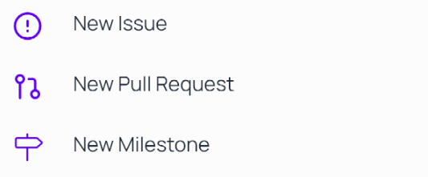
Create PR - menu
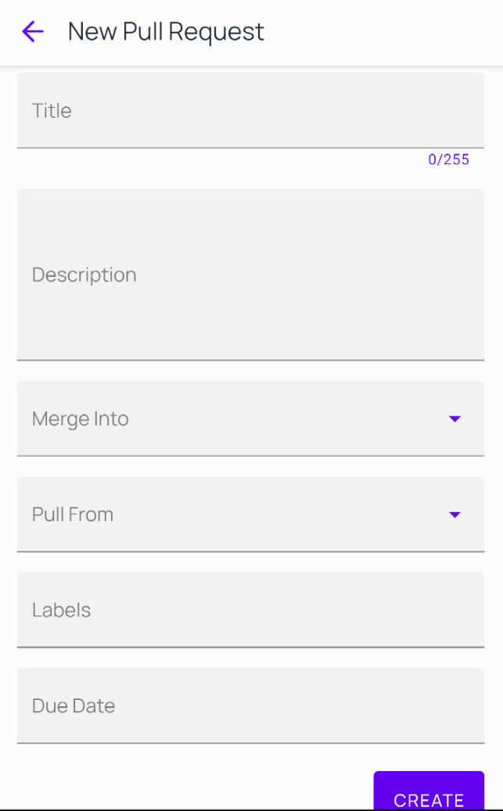
Create PR
2. Repository settings
GitNex 3.2.0 introduced repository settings for Admins.

Settings - menu
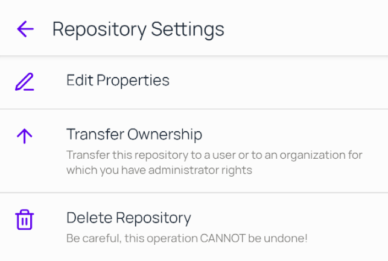
Settings
2.1 Edit repository properties
Repository admins can now edit properties of a repository including name and description.
Edit repo properties
2.2 Transfer repository
Repository admins can transfer repository to other users or organizations.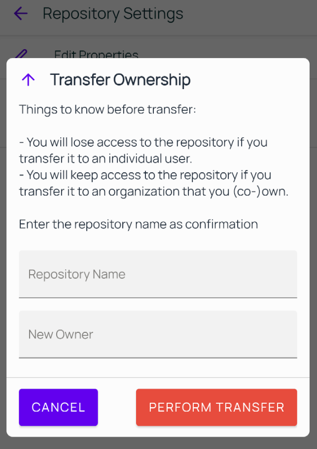
Transfer repository
2.3 Delete repository
Repository admins can also delete a repository.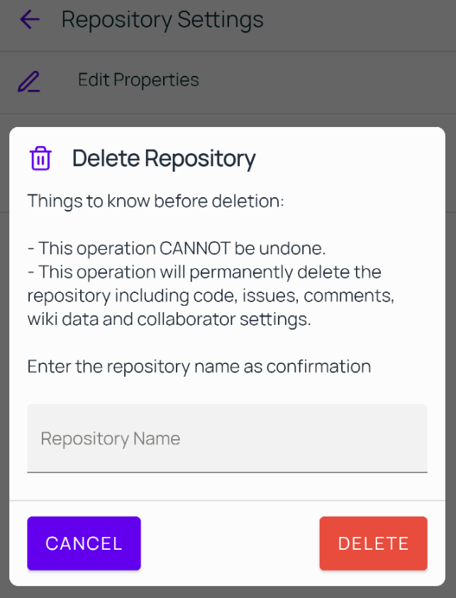
Delete repository
3. Notification badge
To know how many unread notification messages you have, just swipe to the navigation menu.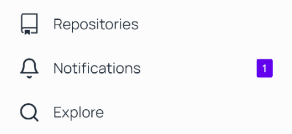
Notification badge
4. Issue/PR indicator
Now when you are in single view mode, you will see an icon before the issue/pr repo title. This is useful if you are coming directly from notification.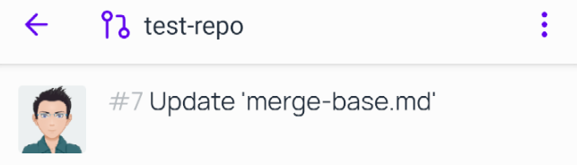
PR indicator
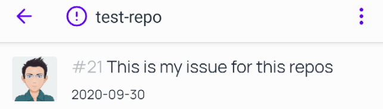
Issue indicator
5. Search issues
You can now explore/search issues across all your repositories in one place. Tap on Exlpore from navigation menu.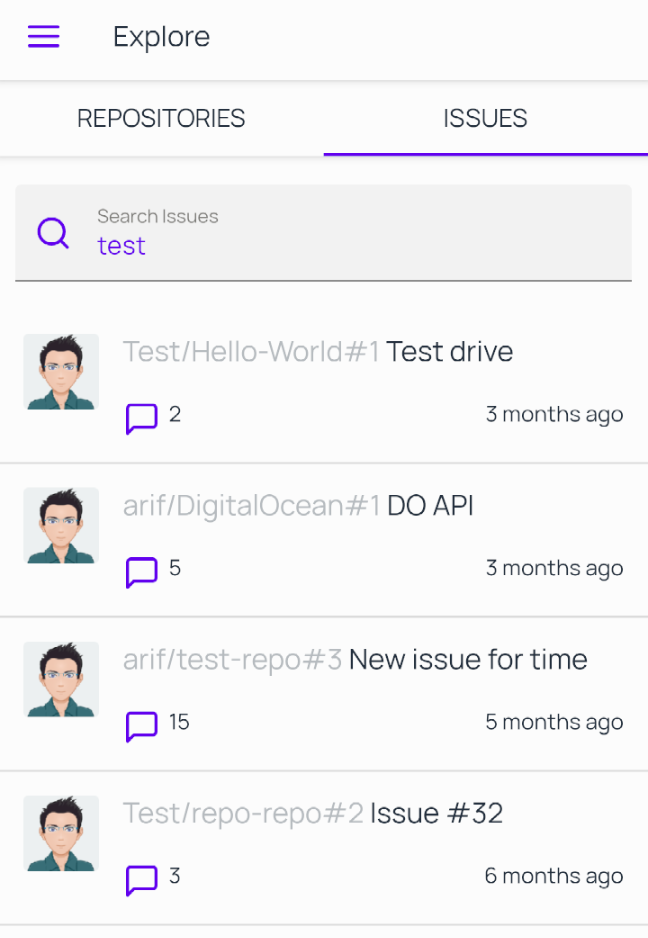
Search issues
6. Explore repositories filters
While searching for repositories you can now narrow down your search with filters applied to them. Also pagination is introduced for explore repositories which will list unlimited repos on scroll.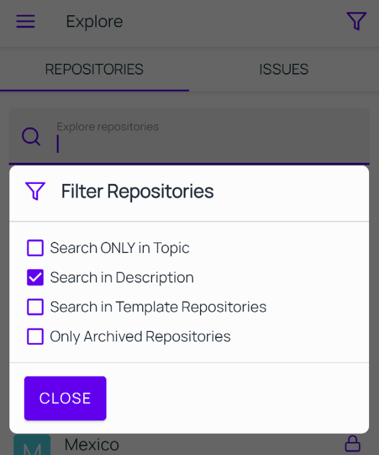
Explore repositories filters
7. Branches and commits under Files tab
We have removed branches tab from the main repository view and moved it to the Files tab. This is to ensure best UX. Now when you switch branches, you can see the commits for that branch on tapping on the commits link.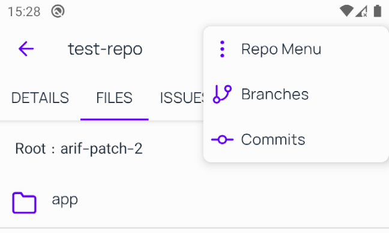
Branches and commits under Files tab
8. Android 11 support
Hope you enjoy this release and support the app as always. 👍